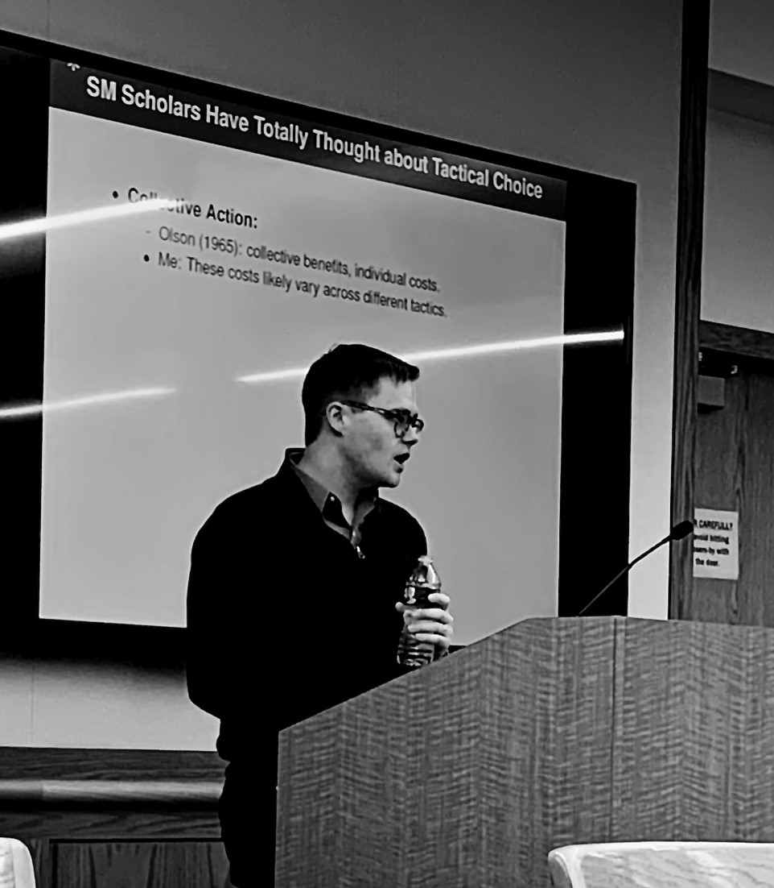
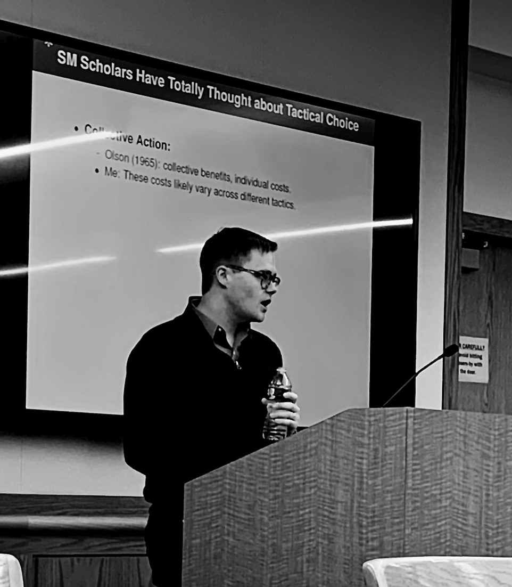

Benjamin Crisman
Ph.D. Candidate |

Benjamin Crisman
Ph.D. Candidate |
I’m a Ph.D. Candidate in the Department of Politics at Princeton University. My dissertation research examines why some social movements use violence to advance their claims while others do not using examples from Nigeria, the United States, and India. More broadly, my research explores the dynamics of violent and nonviolent conflict using tools from computational social science.
Prior to starting at Princeton, I worked as a Research Specialist at the Empirical Studies of Conflict (ESOC) project and at the Center for Global Development. I hold an MA in Politics from Princeton University, an MSc in Development Economics from the University of East Anglia and an AB in Economics and International and Area Studies from Washington University in St. Louis.
Crisman, Benjamin. (2020).
“Disease, Disaster, and Disengagement: Ebola and Political Participation in Sierra Leone.”
Studies in Comparative International Development. https://doi.org/10.1007/s12116-020-09300-x.
[paper][preprint]
Crisman, Benjamin. (2020). “Tactical Choice in Contentious Politics: Evidence from the Niger Delta.”
[available upon request]
Blair, Graeme, Mohamed Bukar, Rebecca Littman, Elizabeth R. Nugent, Rebecca Wolfe, Benjamin Crisman, Anthony Etim, and Chad Hazlett. (2020). “Religious Leaders Can Shift Norms and Change Minds.”
[under review]
Voytas, Elsa and Benjamin Crisman. (2020). “State Violence and Participation in Transitional Justice: Evidence from Colombia.”
[under review]
Crisman, Benjamin and Carla Sung Ah Yoon, Curtis Goos, Danielle Hull, Emily Romano, Jennifer Johnson, Michelle Nedashkovskaya, Narayan Subramanian, Solomon Tesfaye, and Yashna Gungadurdoss. (2020).
“Preventing Violent Extremism: Lessons from Kenya.”
Woodrow Wilson School Policy Workshop Report. Princeton, New Jersey.
[report]
Min, Eric. Manu Singh, Jacob N. Shapiro, and Benjamin Crisman. (2017).
“Understanding Risk and Resilience to Violent Conflicts.”
Background paper for the United Nations–World Bank Flagship Study, Pathways for Peace: Inclusive Approaches to Preventing Violent Conflict. World Bank, Washington, DC.
[report]
Iyengar, Radha, Jacob Shapiro, Benjamin Crisman, Manu Singh, and James Mao. (2017).
“Stabilization in Afghanistan: Trends in Violence, Attitudes, Well-being and Program Activity.”
RAND Labor and Population WR-1192.
[report]
Crisman, Benjamin, Sarah Dykstra, Charles Kenny, and Megan O’Donnell. (2016).
“The Impact of Legislation on the Hazard of Female Genital Mutilation/Cutting: Regression Discontinuity Evidence from Burkina Faso."
Center for Global Development working paper no. 432. Washington, DC.
[report]
Kenny, Charles and Benjamin Crisman. (2016).
“Results through Transparency: Does Publicity Lead to Better Procurement?"
Center for Global Development working paper no. 437. Washington, DC.
[report]
Crisman, Benjamin. (2020). “Weapons of the Few: Numbers and Support for Violence in the American Far Right.”
Postel, Hannah and Benjamin Crisman. (2019). “Dynamics of Displacement: Evidence from Iraq’s War against ISIL.”
Crisman, Benjamin, Alejandro Feged, Mike Findley, Oliver Kaplan, Kristina Kempkey, Paul Kuhne, Joe Young. “Hacking” The Reintegration of FARC Rebels in Colombia. Political Violence at a Glance. [Blog Post]
Stokes Visualization Hub, Data Visualization Consultant, Spring 2020
The Stokes Visualization Hub is a space and service that supports the interdisciplinary digital research and information visualization needs of the Princeton University community. The service is centralized in the E-classroom at Stokes Library in Wallace Hall. Stokes library staff, in collaboration with experts from other departments, work to design and teach workshops focusing on data visualization, qualitative data analysis and the digital research processes.
POL360: Social Movements and Revolution, Preceptor (TA), Spring 2020
This course investigates the politics of protest and revolution, examining the conditions under which protest movements emerge, their choice of tactics, the effects of repression and concessions, and the determinants of movement success. The second part of the course focuses on revolutions, examining the forms they assume and the conditions under which they develop and prove successful. Examples discussed include the civil rights, women's and environmental movements; the French, Russian, and Iranian revolutions; the collapse of communism; and the "color revolutions," the Arab Spring, and other waves of revolution in the contemporary world.
[course feedback] Median rating 5/5.
POL345: Introduction to Quantitative Social Science, Preceptor (TA) x2, Fall 2019
Would universal health insurance improve the health of the poor? Do patterns of arrests in US cities show evidence of racial profiling? What accounts for who votes and their choice of candidates? This course will teach students how to address these and other social science questions by analyzing quantitative data. The course introduces basic principles of statistical inference and programming skills for data analysis. The goal is to provide students with the foundation necessary to analyze data in their own research and to become critical consumers of statistical claims made in the news media, in policy reports, and in academic research.
[course feedback] Median rating 5/5 & 5/5.